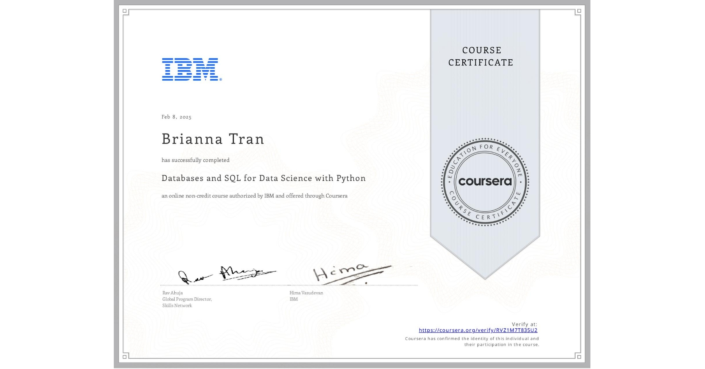
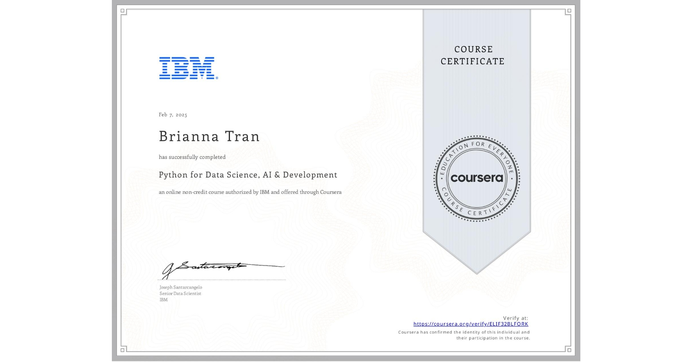

About Me

Information Systems & Data Analytics Major
Seattle Pacific University
Hello! I’m Bria Tran. My background is in data analytics and information systems, with skills in SQL, Python,
Excel, data visualization, and systems design. I’m continuing to expand my knowledge in machine learning and AI to deepen my technical range and stay adaptable as the field evolves.
While I’m passionate about music and the creative industries, my commitment extends far beyond any one field. Wherever my career takes me, be it technology, healthcare, or entertainment,
I want to be the teammate who keeps the bigger picture in focus: the people, the culture, and the purpose behind the work.
I feel a strong calling to protect the humanity behind technology. To make sure progress doesn’t come at the expense of creativity, connection, or ethics. I’m especially passionate about
ensuring that AI and automation don’t overshadow or erode the value of the arts and the human spirit.
Most of the projects you’ll find here are self-directed explorations, evidence of my curiosity, adaptability, and dedication to learning. I thrive in collaborative spaces where
diverse perspectives are valued, and where accountability, empathy, and purpose drive the work forward.
If this approach resonates with your team, I’d welcome the chance to connect and learn how I can contribute to your mission!
Data Analytics Projects
.png)
June 2025
Global Music Trends
An interactive SQL-powered dashboard that explores how music genres, moods, and languages evolve across regions and decades. Discover cultural shifts and sonic patterns in global listening habits.
View on GitHub.png)
June 2025
Film Success Analysis
A data-driven dashboard that uncovers what makes a movie a box office hit — analyzing budget, genre, release timing, language, and global markets using SQL, machine learning, and real-world APIs.
View on GitHub.png)
June 2025
Music Profile Analytics
A personalized dashboard that analyzes my Spotify listening habits, from genre diversity to artist origins. Using audio features, clustering, and visual insights to map your unique taste in music.
View on GitHubProject & Product Strategy

May 2025
Netcentric Manager Suite
A full-stack web app for managing dynamic lists using custom HTTP tools, Node.js, and vanilla JS. Features real-time item updates, CSV storage, and modular interfaces built for streamlined client-server interaction.
View on GitHub
March 2025
Music Catalogue Design
A relational database system built to organize and explore music catalogs by genre, mood, and region. Includes ERD, wireframes, and SQL-backed features designed for scalable artist and track discovery.
View on GitHub
Jan 2024
AdoraPlan System
A complete system design project for managing Eucharistic Adoration schedules, including ERD, user flows, wireframes, and role-based access control. Built to streamline sign-ups, track commitments, and support prayerful community coordination across parishes.
View on GitHubCertifications
IBM Databases and SQL for Data Science with Python
Learned to analyze data using SQL and Python by creating relational databases, writing SQL queries from basic to advanced levels, and leveraging techniques like views, transactions, stored procedures, and joins to work with complex data.
View Certificate
IBM Python for Data Science, AI & Development
Learned Python for data science and software development by mastering core programming concepts, using powerful libraries like Pandas and Numpy, coding in Jupyter Notebooks, and accessing data through APIs and web scraping tools like Beautiful Soup.
View Certificate
More About Me
At the heart of everything I do is one guiding question: How can we listen to people better, through music, data, and technology?
That question fuels both my academic journey and my creative pursuits. I’ve built a solid foundation in SQL, Python, data visualization, and
systems design, and I’m currently diving deeper into machine learning and AI-driven projects to explore how emerging technologies can push the
boundaries of music and creativity while staying rooted in the humanity behind them.
In today’s fast-moving tech landscape, I believe it's just as important to stay curious about the world around us, its communities, histories,
and lived experiences, as it is to master the technical tools.

I’m especially interested in how data can be used not just to optimize performance, but to tell stories, uncover talent,
and create more inclusive experiences. Some of the real-world problems I’m passionate about solving include:
• Helping organizations spot rising talent early through predictive analytics
• Improving recommendation systems to reflect diverse, global audiences
• Designing tools that support culturally relevant, localized content distribution
As a second-generation Vietnamese American who has been working in service roles since I was 15, I’ve developed strong
interpersonal skills, adaptability, and a deep sense of empathy. Growing up between cultures and navigating early work
experiences taught me how to communicate effectively, lead with care, and approach challenges with flexibility, all of
which shape how I collaborate and problem-solve today.

At the same time, I’m drawn to the challenge of turning big, creative ideas into scalable, real-world systems. I’m excited by opportunities to connect vision
with execution, streamlining workflows, aligning cross-functional teams, and designing experiments that lead to better decisions and better outcomes. This has
fueled my growing interest in product strategy and project management alongside my technical work.
Though still early in my career, I’ve had the chance to grow through a range of roles that sharpened my adaptability, collaboration, and communication skills.
Outside of tech, I’m also a musician, DJ, and event curator, creating spaces where people come together around sound! My love for
Traditional music across cultures has introduced me to incredible communities around the world, teaching me more about people than any textbook ever could.

As AI, data systems, and emerging technologies continue to transform the creative industries, I want to help build tools that are not only cutting-edge but also equitable,
culturally aware and human-centered. I’m especially passionate about ensuring that the traditional and cultural roots of music and art aren’t lost in this rapid digital
evolution. Technology should serve as a bridge. To make creativity more accessible, discoverable, and connected, all while honoring the rich histories behind it.
Through thoughtful systems design and data-driven innovation, we have the opportunity to expand who gets to create, be seen, and be heard across geographies, cultures,
and languages. Music is a reflection of who we are, where we’ve been, and where we’re going, and I’d love to be part of a team building toward that future, together.